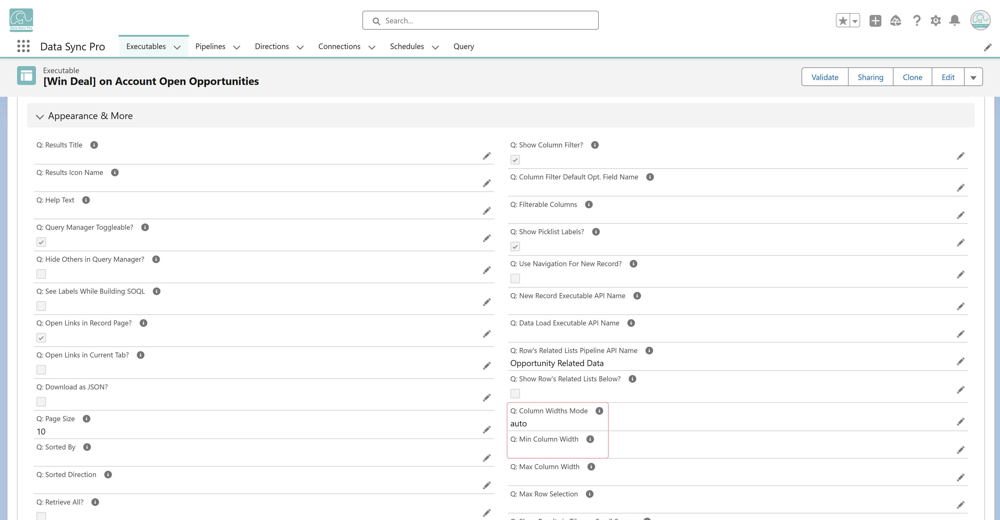

#Data List is built on Salesforce's Lightning Datatable, and defaults to "fixed" column width mode—each column shares equal width across the available viewport.
For more predictable behavior, set “Q: Column Widths Mode†to Auto and define a “Q: Min Column Widthâ€. This allows columns to size naturally based on their content and enables scrolling when needed.
